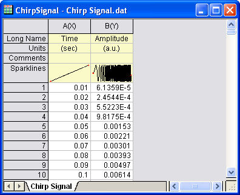
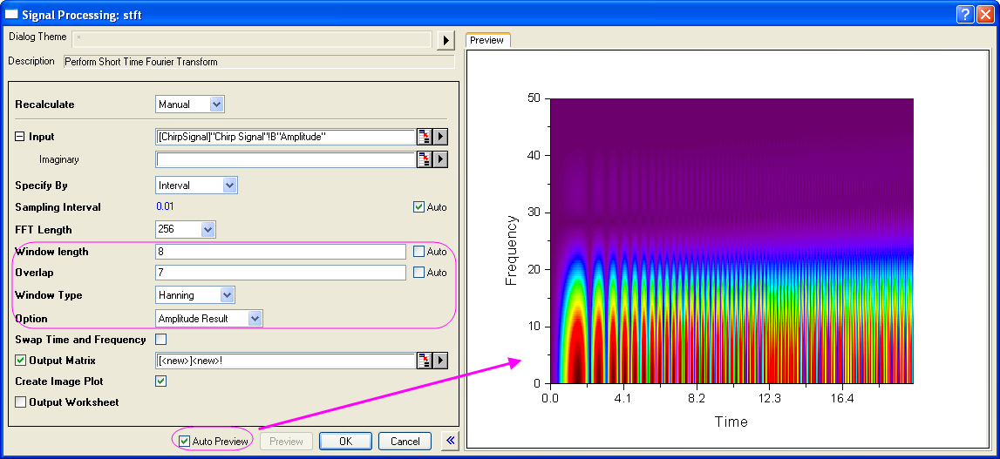
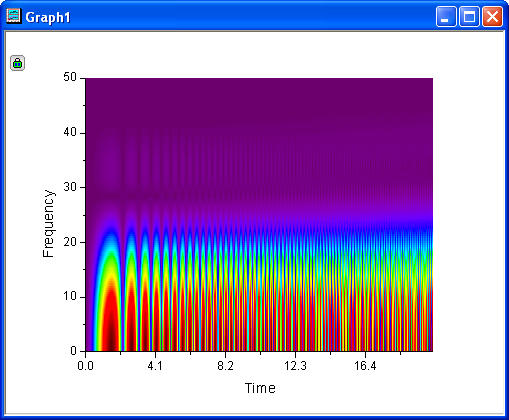
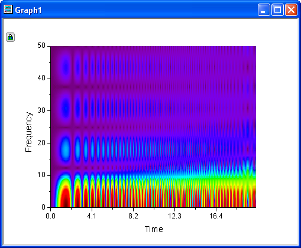
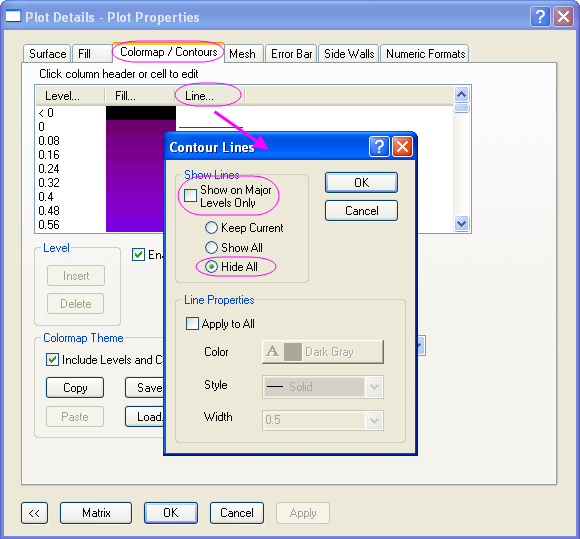
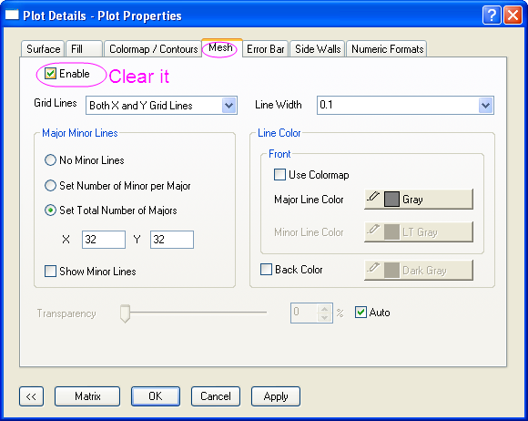
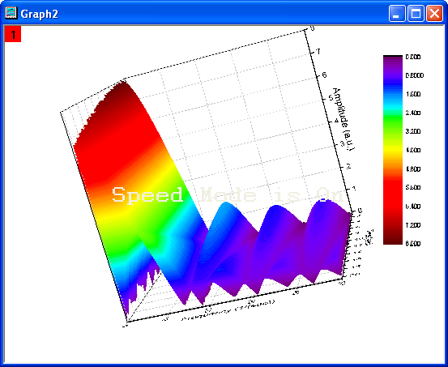

Kurzzeit-Fourier-Transformation (STFT)
STFT
Zusammenfassung
Die Kurzzeit-Fourier-Transformation (STFT) ist eine Zeit-Frequenz-Analyse und eignet sich zum Analysieren von nicht-stationären Signalen. Die STFT stellen Informationen zu Änderungen der Frequenz über die Zeit bereit.
Was Sie lernen werden
In diesem Tutorial lernen Sie, wie Sie:
- eine Kurzzeit-Fourier-Transformation (STFT) durchführen.
- Dialogeinstellungen ändern, um die Zeit- und Frequenzauflösung zu verbessern.
- den Fenstertyp ändern, um die Auflösung zu verbessern.
Schritte
- Öffnen Sie eine neue Arbeitsmappe und importieren Sie die Daten aus dem <Origin-Verzeichnis>\Samples\Signal Processing\Chirp Signal.dat.
- 
- Markieren Sie Spalte B und wählen Sie im Menü Analyse: Signalverarbeitung: STFT, um den Dialog Signal Processing: stft zu öffnen.
- Aktivieren Sie unten im Dialog das Kontrollkästchen Automatische Vorschau, so dass Sie Ihre Ergebnisse im rechten Bedienfeld sehen können. Deaktivieren Sie das Kontrollkästchen Auto neben Fensterlänge und Überlappung. Setzen Sie dann die Fensterlänge auf 8 und die Überlappung auf 7. Fenstertyp ist Hanning, und die Option ist Amplitudenergebnis.
- 
- Klicken Sie auf OK, um die STFT mit den gewählten Einstellungen durchzuführen und Ihre Ergebnisse zu erhalten, einschließlich einer Matrixmappe mit Daten und einem Konturdiagramm mit Farbfüllung.
- 
- Sie können in dem obenstehenden Bild ersehen, dass die Zeitauflösung gut ist, die Frequenz jedoch nicht so augenfällig. Klicken Sie auf das Schloss im Diagramm und wählen Sie dann Parameter ändern im Menü. Dadurch öffnet sich der Dialog STFT erneut. Ändern Sie dann den Fenstertyp in Rechteck und klicken Sie auf OK.
- 
- Jetzt ist die Auflösung von Zeit und Frequenz besser zu erkennen. Bitte beachten Sie, dass es nicht möglich ist, sowohl für Zeit als auch für Frequenz zu optimieren; die beste Möglichkeit besteht darin, das Gleichgewicht zwischen diesen beiden zu finden.
- Um das Ergebnis in 3D anzuzeigen, aktivieren Sie die Ergebnismatrix und wählen Sie im Menü Zeichnen: 3D-Oberfläche: Farbabbildung, um eine 3D-Oberfläche des Ergebnisses zu erstellen.
- Klicken Sie doppelt auf das 3D-Diagramm, um den Dialog Details Zeichnung zu öffnen, und gehen Sie zur Registerkarte Farbpalette/Kontur im rechten Bedienfeld. Klicken Sie auf die Überschrift Linie, um den Dialog Konturlinien zu öffnen und Alle (Linien) zu verbergen.
- 
- Wechseln Sie zur Registerkarte Drahtgitter und deaktivieren Sie das Kontrollkästchen Aktivieren.
- 
- Klicken Sie auf OK, um diese Einstellungen fertigzustellen. Um eine bessere Anzeige zu erhalten, drehen Sie das Diagramm.
- 